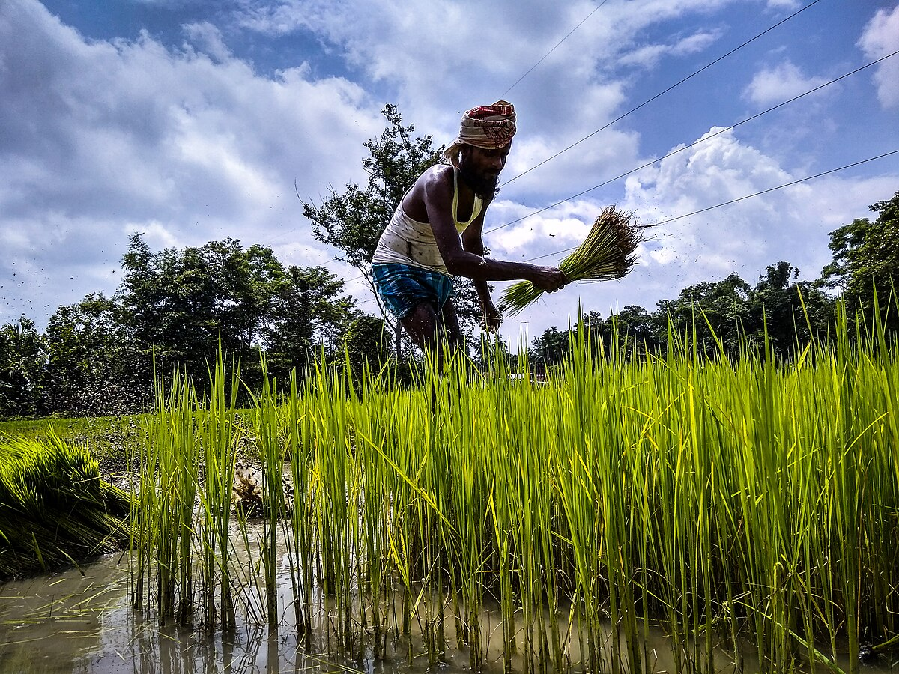

Contextualizando

A agricultura africana é majoritariamente de subsistência, baseada em culturas como milho, mandioca, inhame e arroz, mas também possui monoculturas de exportação (cacau, café, algodão, óleo de palma) que geram divisas, embora aumentem a dependência alimentar.
Os principais desafios são: baixa produtividade devido a técnicas rudimentares, concentração fundiária herdada do colonialismo, dificuldade de acesso à terra e crédito (especialmente para mulheres), pobreza rural e forte impacto das mudanças climáticas.
Por outro lado, há perspectivas positivas, como a modernização com tecnologias digitais, a valorização da agroecologia, o crescimento da agroindústria e iniciativas para aumentar a segurança alimentar e reduzir a pobreza.
Principais Alimentos Cultivados na África
Cereais e Grãos
Milho: mais cultivado em todas as regiões.
Arroz: em expansão, ligado à urbanização.
Sorgo e painço: típicos das savanas.
Trigo: restrito, mas em crescimento com irrigação.


Tubérculos e Raízes
Mandioca, inhame e batata-doce: base alimentar nas regiões tropicais.
Frutas e Vegetais
Frutas: bananas, tâmaras, figos, abacaxis e cítricas.
Vegetais: tomates, cebolas, couves e espinafres.
Produtos de Exportação
Café, cacau e amendoim: sustentam várias economias.
Algodão: produzido em monoculturas nas savanas e florestas tropicais.
A produção de algodão na África concentra-se na África Ocidental, especialmente no Mali, maior produtor do continente. A maior parte é destinada à exportação para a Ásia. Embora o Brasil lidere as exportações globais, a África busca ampliar a produção de algodão orgânico para tornar-se mais sustentável e lucrativa.
A organização responsável por organizar a vinda de representantes do Mali ao Brasil para aprender sobre a agricultura do algodão é a Agência Brasileira de Cooperação (ABC) e a Empresa Brasileira de Pesquisa Agropecuária (Embrapa), que atuam em conjunto com a Organização das Nações Unidas e a Organização Internacional do Trabalho (OIT) em projetos de Cooperação Sul-Sul.
Estas iniciativas permitem a troca de conhecimento e tecnologias entre os países, adaptando experiências brasileiras para o contexto de Mali e de outros países africanos. As visitas envolvem a avaliação de experiências e a capacitação de produtores, focando no fortalecimento da cadeia produtiva do algodão com base em práticas de produção sustentável e trabalho decente.
O Zimbabué é um dos maiores produtores de tabaco da África, cultivando tipos como Virgínia, Burley e Oriental. O produto é vital para a economia nacional, sustenta muitos agricultores e tem na China seu principal mercado de exportação. A produção vem crescendo com melhores chuvas, mais terras cultivadas e aumento de produtores.